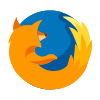

Instaliranje dodatka traje svega nekoliko sekundi. Odete na za Chrome, ili na  za Firefox, i kliknete na veliko plavo dugme ( vidi sliku ). Pretraživač će vas pitati da potvrdite instalaciju. Nakon potvrde, naša ikonica će vam se pojaviti u gornjem desnom uglu vašeg pretraživača.
Postoje dve vrste ikonica: sa i bez notifikacije ( vidi sliku ). Ikonica sa notifikacijom označava da su novi botovi pristigli i da ih treba blokirati, dok ikonica bez notifikacije označava da su svi botovi blokirani. Klikom na ikonicu, pojavljuje se interfejs koji je objašnjen u daljem tekstu.
Interfejs se menja u zavisnosti da li ima novih botova. Ako su svi botovi blokirani, interfejs prikazuje ukupan broj blokiranih botova, u suprotnom, broj botova koji nisu blokirani.
Klikom na tri vertikalne tačkice na interfejsu, otvara se meni. Klikom na opciju menija, otvara se novi prozor sa opcijom koju ste izabrali. Neke od opcija menija će biti objašnjene u daljem tekstu.
Napomena: Meni nije dostupan ako ste na našoj listi botova.Prvi ulazak na Twitter je jako bitan, jer se tada utvrđuje da li ste bot ili ne. Ukoliko niste na našoj listi botova, dobićete prozor dobrodošlice. Prihvatanjem BotBlocker-a kreće proces blokiranja.
Blokiranje se vrši pri ulasku na vaš Twitter nalog. Blokiranje je automatski proces, radi u pozadini vašeg Twitter-a, i ni na koji ne ugrožava vaše dalje korišćenje Twitter-a!
Nakon završetka blokiranja, dobićete obaveštenje sa brojem blokiranih botova.
Napomena: Vreme trajanja blokiranja zavisi od broja botova koje treba blokirati.Ovde možete videti listu svih botova koje je BotBlocker prikupio. U pretrazi možete naći određenog bota imenom ili username-om. Klikom na ime, otvara se Twitter nalog bota. Sa desne strane svakog bota, možete štiklirati ili odštiklirati bota. Bot koji je štikliran će biti blokiran, dok odštikliran neće, a ako je već blokiran od strane BotBlocker-a, biće naknadno odblokiran.
Ovde možete prilagoditi BotBlocker vašem ukusu. Brzo blokiranje i vreme obaveštenja je objašnjeno u daljem tekstu.
Štikliranjem opcije "Blokiraj i botove koje pratim", BotBlocker će blokirati sve botove, uključujuci i one koje pratite. U suprotnom samo one botove koje ne pratite sa vašim Twitter nalogom.
Ukoliko je upaljena u podešavanjima, ova opcija vam omogućava da jednim klikom blokirate bota. Klikom na našu ikonicu pored imena bota, pojaviće se obaveštenje da je bot blokiran. Blokiranje možete prekinuti klikom na dugme "Poništi" u obaveštenjima.
Obaveštenja će vam se pojavljivati sa desne strane ekrana, kada BotBlocker završi proces blokiranja ili kada vi sami blokirate nekoga sa "brzim blokiranjem". Vreme trajanja obaveštenja se može podesiti u podešavanjima.
Ukoliko želite da izbrišete BotBlocker, kliknite desnim klikom na našu ikonicu, zatim na "Remove" ( vidi sliku ). Pretraživač će vas pitati da potvrdite brisanje.
Napomena: Ako ne vidite ikonicu, kliknite na u gornjem desnom uglu vašeg pretraživača.